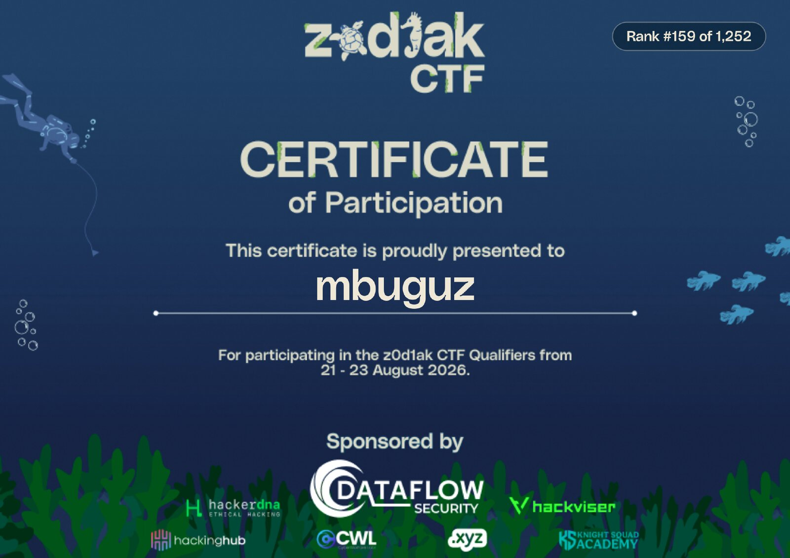

BLACKBOX
Reversed a drone flight-recorder dump built from fixed 16-byte records. Two record types were decoy telemetry; the flag sat in the rare impact records, XOR-masked with a key stored in their own trailer bytes.
Binary parsingXORPython
Results from the events I've played and the challenges I've written up. Cryptography is where most of my solves land, with forensics and OSINT alongside.



Each one is published in full with the solver code. Open a preview here, or read it on its own page.
Reversed a drone flight-recorder dump built from fixed 16-byte records. Two record types were decoy telemetry; the flag sat in the rare impact records, XOR-masked with a key stored in their own trailer bytes.
A stream-cipher service reset its counter on every connection, so the keystream behind the published ciphertext could be reproduced on demand. Encrypting zero bytes handed the keystream back directly.
The same premise against AES-GCM: one nonce sealed every command. Nonce reuse exposed the authentication subkey, which was enough to forge a valid tag on a privileged command the server would never seal itself.
An ECDSA server leaked the top bits of each nonce through a function of the message. A handful of signatures was enough for a lattice (Hidden Number Problem) attack to recover the private key and forge a signature.
Geolocated a photograph of a hilltop church from its architecture and skyline, down to the named church and its town.
Notes are reviewed before they appear.